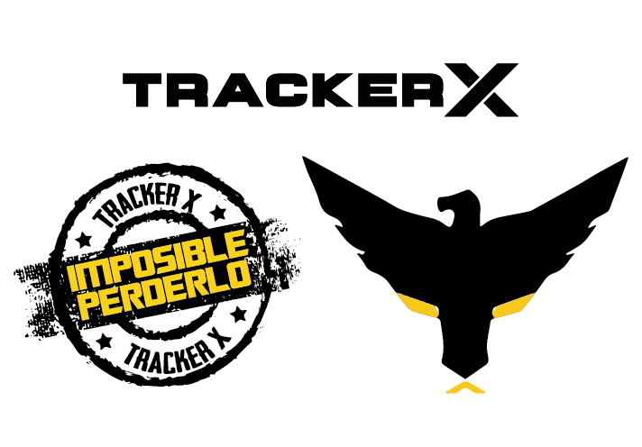

SOBRE NOSOTROS
Seguridad Munditrack es una empresa innovadora en el mercado ecuatoriano, dedicada al asesoramiento, instalación, monitoreo de equipos para control, rastreo y ubicación satelital de vehículos, flotas y personal con la mejor tecnología, altos estándares de calidad, eficiencia y precios accesibles en el mercado nacional; es propietaria de la marca Tracker X.
- LOCALIZACIÓN
- BLOQUEO
- SOFTWARE MULTIPLATAFORMA
- SOPORTE TÉCNICO
- SEGUIMIENTO DE RUTA
- CONTROL DE LLEGADA Y SALIDA
- BOTÓN DE PÁNICO
- ALERTAS